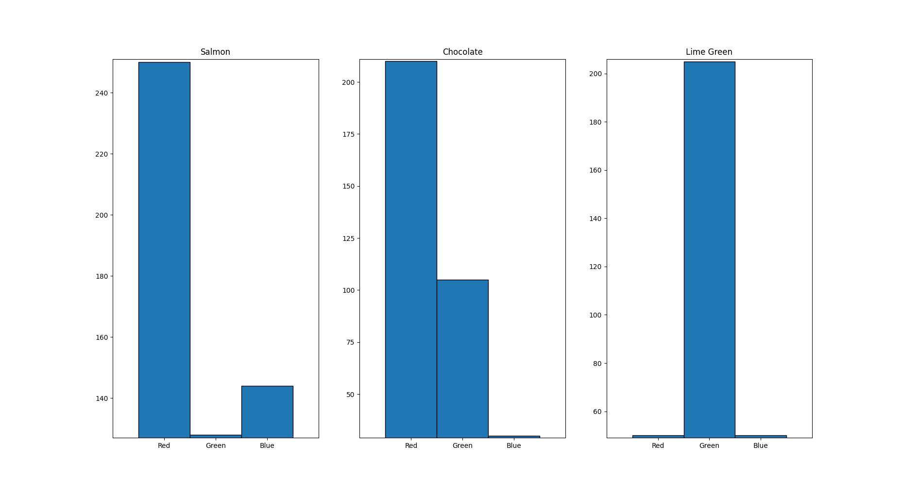
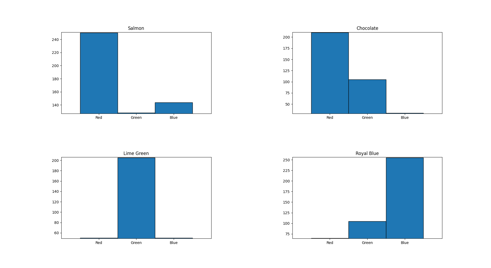
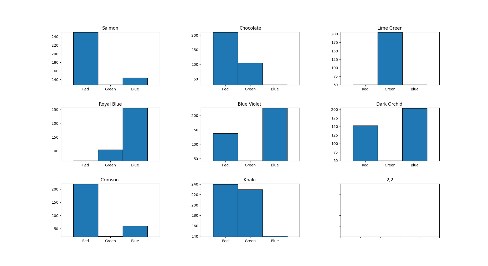

Tutorial
In this tutorial it is explained how the graph_creator_func is working, so that it’s usage is clear and understandable.
The way you can use is is by simply “pointing” to the excel file that you want it to retrieve data and plot, as the function’s argument, and then run the function!
Graph_creator_func runs in 3 stages:
Collecting data
In the first stage, graph_creator_func, using the the excel_utilities module, collects data from the specified excel spreadsheet. For more information on how this is done you can check the reference section of the documentation!
Subplots Matrix Dimentions
In the second stage, graph_creator_func calculates the dimentions of the subplot martix, if the plots we want to have is more than three, so that the plots are not in a straight line. In the case of the subplots multitude being 2 or 3 the plots are going to apear one next to another like this:
The whole calculating process is based on the numbers that have natural numbers as square roots. The reason behind this is because this way we can have a perfect squared martix for our subplots. For example if we want 4 plots, the dimentions of the matrix will be 2 by 2 and it will look like this:
For more than 5 subplots Graph_creator_func counts the multitude of the rows it retrieves from the excel file -always excluding the first column names row-, then calculates it’s square root. If the number is integer that means that the multitude of the plot can create a full square matrix. For example if the multitude is 16 we will have a 4 by 4 matrix. Although, if the number is float, the function will change the number’s type to integer by deleting the demical places using Python’s int() function. As an example the square root of 8 is about 2.82 so the int(2.82) is 2. Here, as a last step, Graph_creator_func will assign the matrix’s dimentions to int(2.82) + 1 and thus build a 3 by 3 matrix that holds up to 9 subplots, leaving one space empty. For this example we will have a plot that looks like this:
The Plot
The third and final stage, Graph_creator_func generates one plot or many subplots, depending on the situation, as shown on the pictures above!